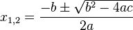

① 下面的程序会输出什么？
// 1+1_1.cpp
#include <iostream>
using namespace std;
int main()
{
cout << 1+1 << endl;
return 0;
}
答：2
② 编写程序，计算 10 - 12、25×4、154、999÷3、3÷2。
cout << 10 - 12 << endl;
cout << 25 * 4 << endl;
cout << 15 * 15 * 15 * 15 << endl;
cout << 999 / 3 << endl;
cout << 3 / 2 << endl;
在 C/C++ 中，* 表示乘号，/ 表示除号。
③ 如果想要输出 1 + 1 = 2，而不是直接输出 2，应该怎么办？
// 1+1_2.cpp
#include <iostream>
using namespace std;
int main()
{
cout << "1 + 1 = 2\n";
return 0;
}
程序会对字符串中的非转义字符进行原样输出。
当然，还可以把第六行改成：
cout << "1 + 1 = " << 1+1 << endl;
④ 你学会用计算机做加减法了吗？
我们来分析一下上述方法的缺点：对于每一个计算任务，都要专门设计一个程序，这样子花的时间还不如人类直接算得快呢。
有没有方法设计出一个程序，让计算机可以对你输入的任意两个合适的数进行求和呢？答案当然是肯定的。我们需要借助变量的帮助。
我们先来看看解决上述问题的代码：
// 1-2-1.cpp
#include <iostream>
using namespace std;
int main()
{
int a, b, sum;
cin >> a >> b;
sum = a + b;
cout << a << '+' << b << '=' << sum << endl;
return 0;
}
int a, b, sum;
这是一句变量定义，它告诉计算机，a、b、sum 分别表示三个整数（Integer）。a、b、sum 这三个名字是由编程者自己定的。
cin >> a >> b;
类似于输出语句，这是个输入语句。cin 表示标准输入流，>> 的方向表示数据从标准输入设备（通常是键盘）流向变量 a 和 b 中。程序运行过程中我们用键盘输入两个数的时候，需要用空白字符（如空格）来分割，程序才能正常地识别它们。执行完这一句后，a 和 b 所表示的值便成了我们输入的两个数。
sum = a + b;
这个语句的意思是，把 a 和 b 的值相加后，将结果存入 sum 变量中。这一行看起来很像是个等式，但实际上，这里的 = 表示的并不是等于号。在 C/C++ 中，= 是赋值符，它表示把它右边的值存到它左边的变量里；表示等号的是 ==，不是 =，请注意区分它们。执行完这一句后，sum 的值便会成为 a 与 b 的和。
cout << a << '+' << b << '=' << sum << endl;
这是我们曾经接触过的输出语句。略有不同的是，程序并不会输出 a、b、sum 这几个字母，而是输出它们对应的值。像 '+' 和 '-' 这样用单引号 ' 括起来的表示单个字符。（用 " 括起来的叫做字符串，可以包含若干个字符。）如果我们确实想要输出字符 a 和 b，可以将这行改为：
cout << 'a' << '+' << 'b' << '=' << sum << endl;
当然，还可以写成：
cout << "a + b = " << sum << endl;
除了通过输入让变量获得具体的值，我们还可以在代码中直接给变量赋值，如：
// 1-2-2-1.cpp
#include <iostream>
using namespace std;
int main()
{
int num1, num2;
num1 = 3;
num2 = -4;
num1 = num1 + num2;
cout << num1 + num2 << endl;
return 0;
}
像 num1、num2 这样的我们称为“变量”，它们的值可以在程序运行的过程中多次被改变；区别于“变量”，我们把上面程序中的 3、-4 称为“常量”，常量的值在编译的时候便固定下来了。
请尝试编译和运行以下程序，你发现了什么？
// 1-2-2-2.cpp
#include <iostream>
using namespace std;
int main()
{
int N = 3.14159;
cout << N << '\n';
return 0;
}
C/C++程序对于数据类型是敏感的。在程序中，我们定义了 N 为一个整形变量（int 说明了这一点），那么 N 就只能够表示整数。若我们想要表示小数，我们可以把 int 改为 double，它表示双精度浮点型（这个名字与 double 型在计算机内部的实现方式有关）。
运行一下这个程序：
// 1-2-2-3.cpp
#include <iostream>
int main()
{
using namespace std;
int A = 2000000000, B = 1000000000, Sum;
Sum = A + B;
cout << "A = " << A << ", B = " << B << endl;
cout << "Sum = " << Sum << endl;
return 0;
}
这个程序在大多数计算机上的输出结果居然是负数，是不是有点出乎意料？为什么它无法输出正确结果呢？
我们知道，数据在现代计算机中是以二进制形式存储的。我们每定义一个变量，计算机便会为它在内存中分配一定的空间。在多数 32 位计算机中，int 型往往会占据 4 个字节，即有 32 个二进制位（1 个字节 (Byte) 由 8 个二进制位 (bit) 构成）。由数学知识可以知道，32个二进制位仅能构成 232 种组合，即 int 型仅能表示从 -2147483648 至 +2147483647 这 4294967296 个整数。A + B = 3000000000，超出了这个范围，无法用 int 型表示，因此导致了错误的运算结果。我们把这种情况称为“整型溢出”。至于这个错误结果为负数的原因，则与计算机内部采用补码表示法表示有符号整数有关。
类似于整型，C/C++ 中其他的基本数据类型也有固定的位宽，也只能表示某一范围内的数据。附录 1 列出了 C++ 中的基本数据类型及数据范围。
根据附录 1，我们可以知道，要实现上述程序的目的，我们只需要把 int 改成 long long 就可以了，因为 long long 型通常可以表示从 –9223372036854775808 到 +9223372036854775807 范围内的整数。那么，这是不是意味着，计算机面对比这更大的数就无能为力了呢？其实不然，运用一些算法知识，我们可以让计算机运算比这大得多的数。
// 1-2-3.cpp
#include <iostream>
using namespace std;
int main()
{
char zero = '0', one = '1', two = '2', A = 'A', a = 'a';
int code;
code = zero;
cout << zero << ": " << code << endl;
code = one;
cout << one << ": " << code << endl;
code = two;
cout << two << ": " << code << endl;
code = A;
cout << A << ": " << code << endl;
code = a;
cout << a << ": " << code << endl;
code = a = a + 1;
cout << a << ": " << code << endl;
return 0;
}
上面的 char 表示字符型，字符型常量通常用单引号 ' 括起来。像 '\n'、'\t'、'\\'、'\0' 这样用转义序列表示的也是单个字符。有的字符是可见的，也有的字符是不可见的。在计算机中，存储的都是它们对应的 ASCII (/'æski/) 编码（详见附录 2）。因此，在上面的例子中，我们可以把 char 型值赋值给 int 型变量，并能从中看到字符与编码之间的对应关系。可以看到，字符 '0' 并不与编码 0 直接对应。实际上，平时我们以键盘输入、屏幕输出、文本文件存储的数字都是由多个字符组成的，而我们能够直接用 cout 来输出整型数据，是因为 cout 自动地帮我们完成了从 1 个整型数据到多个字符的转换。（cin 依此类推。）
我们还可以像这样改写上面的例子：
cout << 'a' << ": " << (int)'a' << endl;
在这里，我们显式地指出了把 'a' 转换为整型（也可以写成 int('a') ）。
让我们尝试编译一下这个程序。
// 1-2-4.cpp
#include <iostream>
using namespace std;
int main()
{
int go = 3;
cout << "go: " << go << endl;
int go = 4;
cout << "go: " << go << endl;
return 0;
}
出现了编译错误。把第 9、第 10 行的 go 改成 Go，重新编译，编译成功了。想一想，这说明了什么？
1、在同一代码块内，不能重复定义同名变量。
2、在 C/C++ 中，大写与小写的含义是不同的。
再试试这段：
int goto = go + 1;
cout << "goto: " << goto << endl;
又出现了编译错误。这是由于变量命名不合法（不符合语法）导致的。虽说变量的名字是由编程者自己起的（像这样由编程者自定义的名称叫“标识符”），但在起名时需要遵循一定的规则：
1、标识符可以由大小写字母、下划线和数字组成，且第一个字母不能为数字。
2、C/C++ 语言为了实现其功能，规定了一些单词表示特定的含义，这样的单词包括关键字、C++标准库中定义的标识符等。我们定义的标识符不应与这些产生冲突。（C++的关键字详见附录 3）
3、为了避免与编译器的实现发生冲突，给标识符命名时应尽量避开以下划线开头的名称。
4、为了使代码易于维护，标识符应能望文知义。
上面的例子之所以会出现编译错误，便是因为使用了关键字 goto 来当变量名。
1种思路是，利用一个中间变量实现两个变量之间的交换。
// 1-3-1.cpp
#include <iostream>
using namespace std;
int main()
{
int a, b, tmp;
cin >> a >> b;
tmp = a;
a = b;
b = tmp;
cout << a << ' ' << b << endl;
return 0;
}
想一想，我们为什么需要一个中间变量来辅助？
其实，这与赋值运算的特点有关。当我们执行 a = b; 时，意味着：
a 原来的值被抛弃，变成赋值符右边的 b 的值。b 的值保持不变。这个操作就像复制文件时采用了覆盖粘贴一样。如果在执行 a = b; 前不把 a 原来的值保存起来，就会失去这个值。
另一种方法是利用加减法，这种方法不需要用到辅助变量：
int a, b;
cin >> a >> b;
a = a + b;
b = a - b;
a = a - b;
cout << a << ' ' << b << endl;
下表解释了它的原理。表中 a、b 两项表示执行完左边的语句后，变量 a、b 的值。
| 语句 | a | b |
|---|---|---|
| cin >> a >> b; | 设为 x | 设为 y |
| a = a + b; | x + y | y |
| b = a - b; | x + y | x |
| a = a - b; | y | x |
还有更简单的方法：
cin >> a >> b;
cout << b << ' ' << a << endl;
a += b; 相当于 a = a + b;
a -= b; 相当于 a = a - b;
此外，还有 *=、/=、<<=、>>= 等等，依次类推。
在了解比较运算符前，让我们先来认识一种很常用的基本数据类型——布尔型（bool）。
bool 型数据只有两个值：真（true）与假（false）。
和其他类型类似，我们可以这样定义 bool 型变量：
bool a = true;
bool b;
b = false;
在 C++ 中，bool 型与整型有着密切的联系。非 0 的整型值可以看作是 true，整型 0 可以看作是 false。我们也可以用 true 和 false 向整型变量赋值。（在早期的 C 语言中，没有独立的 bool 类型，人们通常用 int 型来完成 bool 型的功能。）
乍一看，这 bool 型变量好像没啥用。不过，相信同学们在学习条件控制语句和循环控制语句后，会进一步地了解 bool 型的作用。
| 比较运算符 | 含义 |
|---|---|
| == | 等于 |
| != | 不等于 |
| < | 小于 |
| <= | 小于等于 |
| > | 大于 |
| >= | 大于等于 |
比较运算的结果为 bool 型值，这不难理解。如：
int a = 5;
bool b1, b2, b3, b4, b5, b6;
b1 = (a == 5); // true
b2 = (a != 5); // false
b3 = (a < 4); // false
b4 = (a <= 5); // true
b5 = (a > 5); // false
b6 = (a >= 3); // true
值得注意的是，C/C++ 中的比较运算符和数学上的用法有一些不同的地方。在数学上，比较运算符可以连着写，如 2 ≤ a ≤ 4，但在 C/C++中，需要这样写：(2 <= a) && (a <= 4)。这里的 && 便是我们后面将要认识的逻辑运算符的一种。
在 C/C++ 中，加、减、乘、除对应的运算符分别为 +、-、*、/，此外还有个 % 运算符，它叫“取模运算符”，可理解为取余数。这些运算符的用法与数学上的用法类似，但要注意的是，整型与整型进行除法运算，结果依然为整型，小数部分会被舍去，且不进行四舍五入，如：3 / 2 的结果为 1。如果想要得到有小数的结果，可以写成 3.0 / 2.0，它的结果是一个浮点型的值，包含小数部分。
当加减与乘除同时出现时，程序会先算乘除，再算加减。这是因为，在 C/C++ 中，乘除运算符的“优先级”比加减的高。如果我们确实先算加减再算乘除，可以使用小括号（圆括号）。但与数学上有所不同的是，当括号需要嵌套时，C/C++ 依然使用小括号，而不用中括号。对于表达式 18 / 3 * 2，则是从左往右计算，运算结果为 12。因为在 C/C++ 中，乘除运算符的“结合性”为“左结合”。当优先级与结合性显得复杂时，我们通常会显式地加上括号，这样更容易理解。（关于运算符的“优先级”和“结合性”，详见附录 4。）
任务一：编写程序，实现以下功能：输入一个四位数，将它的每一位逆序输出。如：输入 1234，输出 4321。
// 1-3-4-1.cpp
#include <iostream>
using namespace std;
int main()
{
int num;
cin >> num;
// We can print the number one by one
cout << num % 10;
cout << (num / 10) % 10; // (num % 100) / 100
cout << (num / 100) % 10; // (num % 1000) / 100
cout << num / 1000 << endl;
return 0;
}
当我们要提取数字中的某一位时，常常会借助取模运算符的帮助。
任务二：编写程序，解一元二次方程（假设 Δ = b2 - 4ac ≥ 0）。依次输入一元二次方程一般式 ax2 + bx + c = 0 中的系数 a、b、c，输出方程的两个解。
// 1-3-4-2_wrong.cpp
#include <iostream>
using namespace std;
int main()
{
double x, a, b, c;
cin >> a >> b >> c;
a * x * x + b * x + c == 0;
cout << x << endl;
return 0;
}
运行一下就会发现，这种写法是错误的。我们有时会说计算机是笨的（至少目前是这样），是因为虽然它算得快，但不懂得如何去算，需要人类告诉它算的方法。上面的程序中，我们只是列出了方程，计算机并不知道该怎样去解它。透过这个程序的结果 ，我们也可以看到，在自动变量（如上面的 x）获得具体的值前，它的值是不确定的。
下面我们利用一个通用的方法——求根公式法来解决这个问题。

要使用求根公式，我们得搞定开平方。别担心，Math 库中的 sqrt() 函数可以帮我们。它的用法如下：
// 1-3-4-2.cpp
#include <iostream>
#include <cmath> // needed by sqrt()
using namespace std;
int main()
{
double a, b, c;
double sqrt_delta;
cin >> a >> b >> c;
sqrt_delta = sqrt(b * b - 4 * a * c);
cout << "x1 = " << (-b + sqrt_delta) / (2 * a) << endl;
cout << "x2 = " << (-b - sqrt_delta) / (2 * a) << endl;
return 0;
}
请同学们自行查阅资料，完成以下学习任务。
十进制数与二进制数、二进制数与八进制数、二进制数与十六进制数之间的相互转换（包括整数和小数的转换）。
C/C++ 代码中，八进制常数与十六进制常数的表示方法，以及浮点数的科学计数表示法。
原码与补码。
C/C++ 中，“表达式”的含义。
C/C++ 中的数据类型限定符：short、long、unsigned。
C/C++ 中的自增、自减运算符：i++、++i、i--、--i。
C/C++ 中的位运算符：左移（<<）、右移（>>）、按位与（&）、换位或（|）、按位非（~）、按位异或（^）。
用 cstdio 中的 scanf() 和 printf() 输入输出整数、浮点数、单个字符的的方法。
1、编译运行这个程序，看看发生了什么。
#include <iostream>
using namespace std;
int main()
{
int num;
num = 3 / 0;
cout << num << endl;
return 0;
}
把第 5、第 6 行改为：
double num;
num = 3.0 / 0.0;
再重新编译运行，看看又发生了什么。你认为为什么会这样？
2、我们知道，3 / 2 的结果为整型，3.0 / 2.0 的结果为浮点型。那么，3 / 2.0 的类型是什么？3.0 / 2 的类型是什么？请编写程序验证你的想法，并查阅资料，看看你的想法是否正确。
3、有：
double n;
n = 1 / 3;
执行上面两行代码后，输出 n 的值，看看与你猜测的结果是否相同。
4、
#include <iostream>
using namespace std;
int main()
{
double a = 0.01, b = 0.1;
a += 0.01;
a += 0.01;
a += 0.01;
a += 0.01;
a += 0.01;
a += 0.01;
a += 0.01;
a += 0.01;
a += 0.01;
bool ok = (a == b);
cout << a << ' ' << b << endl;
return 0;
}
变量 ok 的值是 true 还是 false？这又说明了什么？
（提示：可以通过将 ok 转为整型输出来判断 ok 的值。）
5、运行以下程序：
#include <iostream>
using namespace std;
int main()
{
int a, b;
cin >> a >> b;
cout << a << ' ' << b << endl;
return 0;
}
① 输入一个数、一个空格、又一个数、回车，观察结果。再把一个空格换成两个空格、三个空格、四个空格等重新尝试。
② 输入一个数、回车、又一个数、再回车，观察结果。再把中间的两个回车换成多个回车试试。
③ 输入两个数，中间用任意个空格、Tab、回车来间隔，观察结果。再在第一个数的前面和第二个数的后面输入任意个空格、Tab、回车试试。
④ 这次我们把一个数改成一个字母来尝试，观察结果。再把一个字母改成几个字母试试。
通过上面的探究，你总结出了什么？
6、Math 库中提供了任意角的三角函数，在程序头部 #include <cmath> 后，可以使用 sin()、cos()、tan() 等函数，它们的返回值（可以理解为计算结果）为 double 型值。尝试输出 sin(30)、tan(45)、cos(3.1415926535 * 2) 的值，它们与你预期的结果是否相同（或相近）？请查阅资料弄明白其中的原因。
1、输入两个三位数，将第二个数倒转（如 123 变为 321）后与第一个数相加，并输出结果。
2、已知函数 f(x) = (cos2x - sin2x)2 + (2 · sin x · cos x)2，输入 x 的值，输出 f(x) 的值。
3、今有鸡兔同笼，上有 M 头，下有 N 足。编写程序，输入 M、N 的值，输出鸡与兔各有几只。（输入的 M、N 确保可以得到正确的解。）
4、解关于 x、y 的二元一次方程组：
Ax + By + C = 0
Dx + Ey + F = 0
输入 A、B、C、D、E、F 的值，输出 x、y 的值。
http://www.tutorialspoint.com/cplusplus/cpp_data_types.htm
http://zh.wikipedia.org/zh-cn/ASCII
http://zh.cppreference.com/w/cpp/keyword
http://zh.wikipedia.org/zh-cn/C%E5%92%8CC%2B%2B%E9%81%8B%E7%AE%97%E5%AD%90